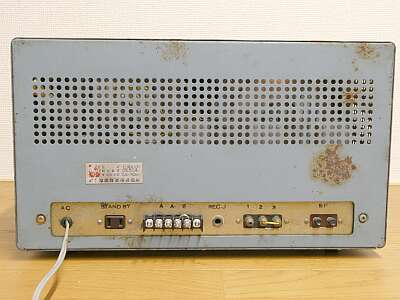 |
極めてシンプルな背面です
３P-ANT接続端子（３Ｐ）は、破損していたため取付穴位置の合った手持ちの４P端子台に交換しています
他のものはオリジナルのままです |
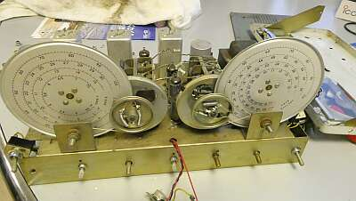 |
長期に保管された感、満載です
まずは分解清掃から
糸掛けダイヤルについてはメイン、スプレッド共にＮＧ・・・ちゃんと駆動できません |
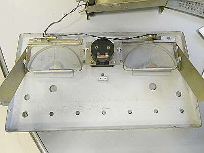 |
パネル裏です
赤のダイヤルカーソルが薄くなっています（特にメインダイヤル）
いつものようにカッティングシートを細く切って対応します
照明はダイヤル部のみで、Sメーターにはありません |
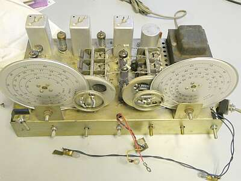 |
正面パネルを外したシャーシ側です
配線は、フロントパネルのダイヤル照明とSメータ接続用
大型ＩＦＴが目につきます |
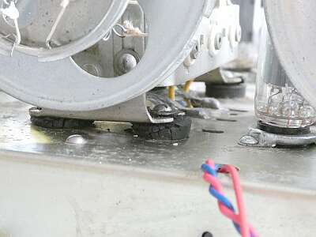 |
糸掛けダイヤルが上手く駆動できなかった犯人です
ＶＣを浮かすためのゴムブッシングが劣化して、ビスが沈んでＶＣが浮き上がってしまっていました
いくら糸を張っても上手く駆動できないはず・・・ |
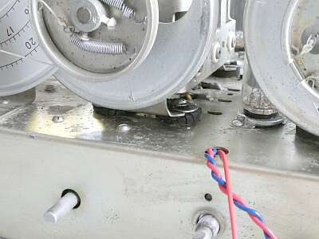 |
ＶＣを取り外してゴムブッシングを交換するだけの元気はなかったので、横着をしてＬ金具を加工してビスの頭が沈まないように工作しました
これで糸掛けダイヤルも、問題なく駆動できるようになりました
正しい対応としては、劣化したゴムブッシングの交換であることは間違いありません！ |
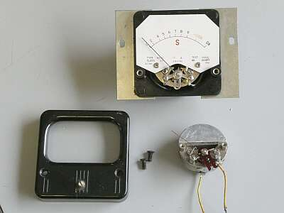 |
メーターが断線していました
HIOKI HK-52型のような形状のメーターです
フロントパネルから見たイメージと違って、結構大型のメーターが採用されています
新たなメーター入手は、まず不可能
そうなると手持ち品総動員です
同等の１ｍAのメーターAssyを採用しているパネルメーターを探して、中身を入れ替えました
関係して、針の色が赤から黒になってしまいました |
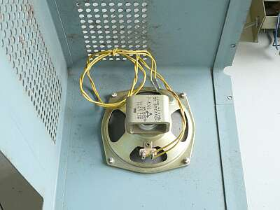 |
４”内臓スピーカーも松下製です
フロントから見て右側サイドに取り付いています |
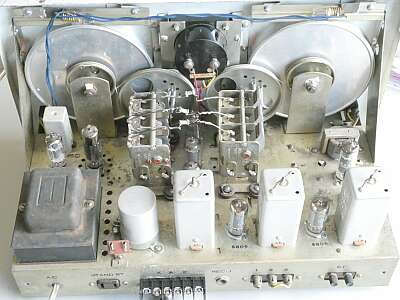 |
改めてシャーシ上部
後ろからです
ベークライトの板に端子がついた３P-ANT端子が破損していたので、取付穴位置が合った手持ちのSATO 4P端子台に交換しました |
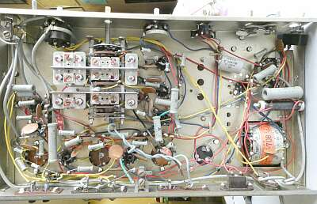 |
シャーシ下の様子です
ダイヤルが邪魔をして逆さに置けませんので、立てたものを横向きに写しています
バンド切替SW中央のウェハに異常が生じています（後述） |
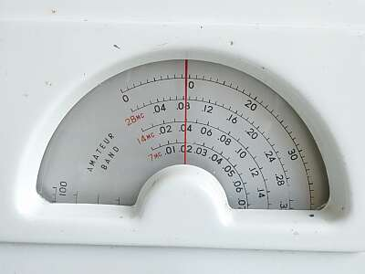 |
スプレッドダイヤルです
７．０－７．１５MHｚ
１４．０－１４．３２ＭＨｚ
２８．０ー２８．６８ＭＨｚ
実用的に見えます |
|
機械的な問題を解決後、電気的なチェックをしました
ヒューズホルダの接触不良やACコードのブッシングの劣化・・・ゴム関係は、VCの取付部でも劣化が問題になっていました・・・など、必要な対処を行いました
ＩＦＴ、ＢＦＯコイルの同調は、ほぼほぼ正しい状態です
ＲＦコイルパックについては、バンドＳＷそのものに問題が生じているようで（構造上簡単に確認できない）、Ｂ-ＢＡＮＤ、Ｃ-ＢＡＮＤにおいてはＲＦ増幅部のプレート側同調が取れません（当然、必要な感度は得られません）
唯一、正常なA-ＢＡＮＤについて感度を計測、なかなかです
|
|
AM S/N１０ｄB
１KHz30%変調ON/OFF |
|
CW（ビート） S/N１０ｄB
信号ON/OFF |
| ３．５MHｚ帯 |
|
1μV |
|
０．４μＶ |
| ７ＭＨｚ帯 |
|
1μV |
|
０．４μＶ |
|
|
|
|
|
ＳＳＢも復調できます（強い信号は、ＩＦゲインを下げる必要があります・・・この当時は、これが普通） |
|